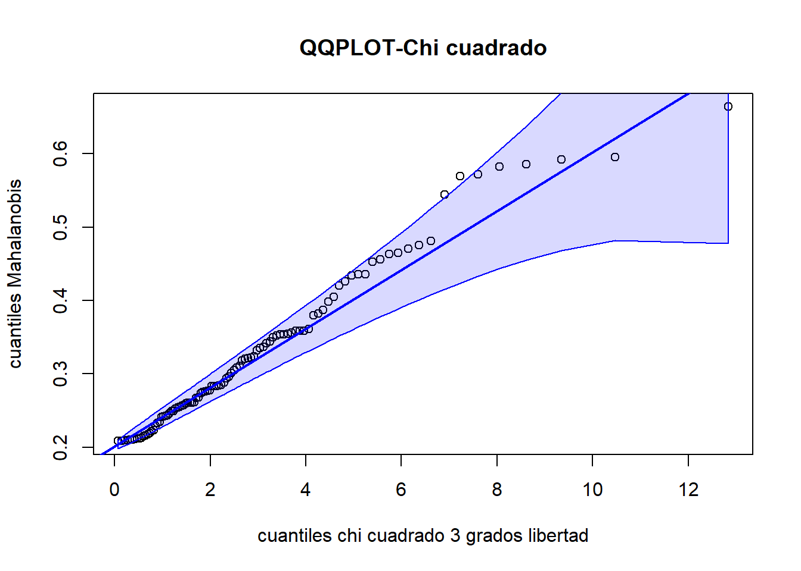
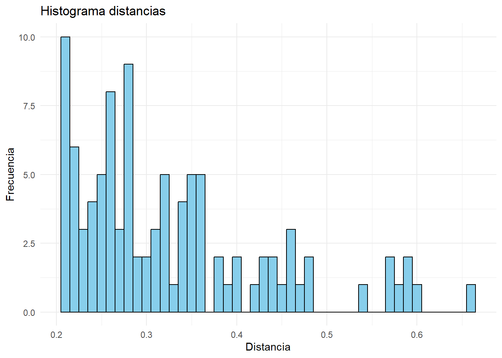
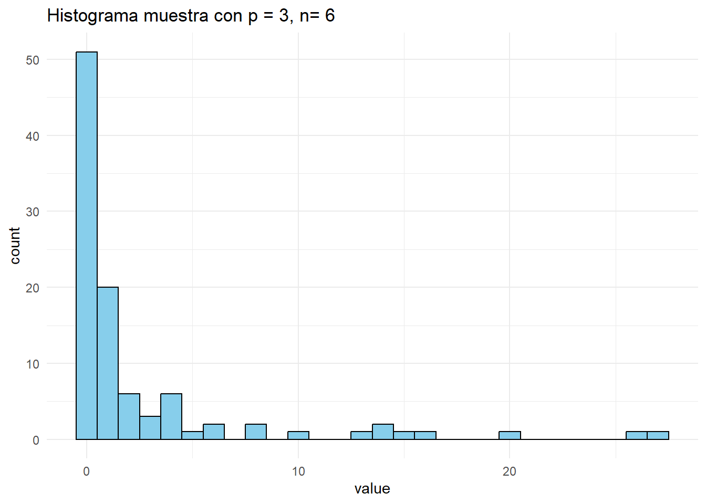
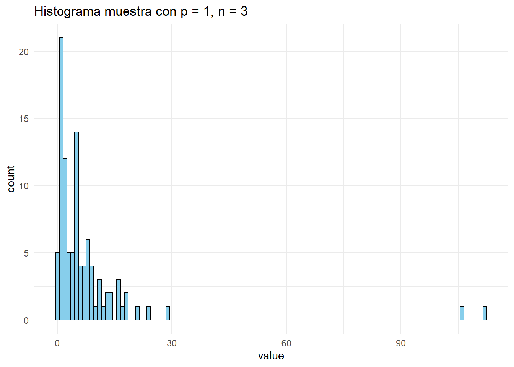
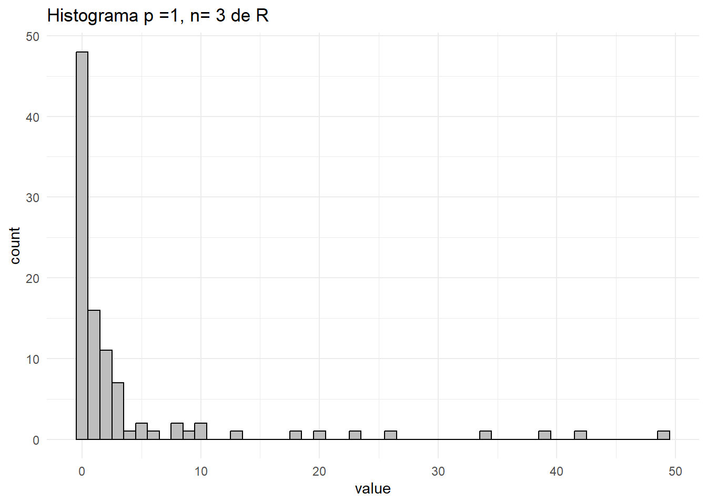
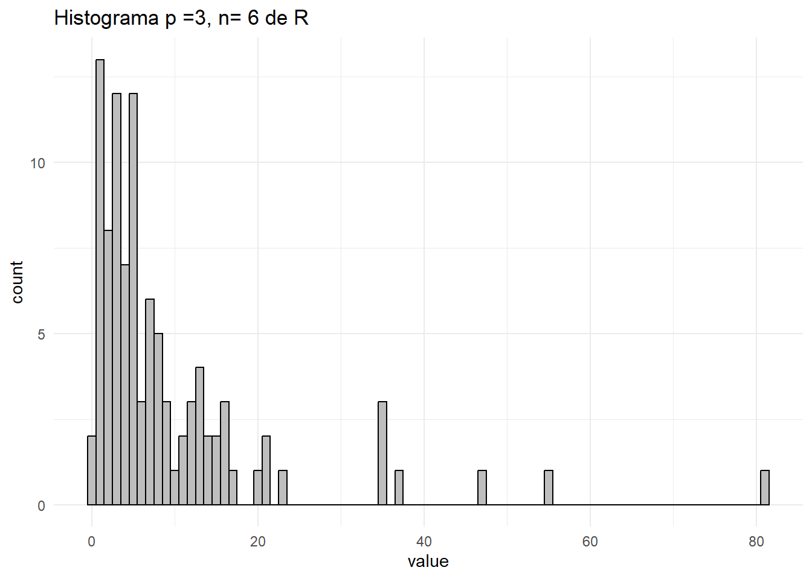

b = matrix(c(1, 2, -3), ncol = 1)
S = matrix(c(1, 0, 1,
0, 3, 1,
1, 1, 2), ncol = 3, byrow = TRUE)
m = matrix(c(-1,1,0), ncol = 1)
media = t(b)%*%m
var = t(b)%*%S%*%b
print(media[1][1])[1] 1print(var[1][1])[1] 1320582- Análisis de Datos para el GMAT
Supongamos que un analista financiero quiere estudiar la relación entre tres tipos de activos financieros: el precio de una acción \(X_1\), la tasa de interés de un bono \(X_2\), y el precio de una materia prima \(X_3\). Se asume que el vector \(\mathbf{X} = (X_1, X_2, X_3)^t\) sigue una distribución normal multivariante con media \(\mu = (-1, 1, 0)^t\) y matriz de covarianzas
\[ \Sigma = \begin{pmatrix} 1 & 0 & 1 \\ 0 & 3 & 1 \\ 1 & 1 & 2 \end{pmatrix} \]
Como cada \(X_i\) sigue una normal \(\mathcal{N}(\mu_i,\sigma_{ii})\), para \(i = 1,2,3\). Entonces simplemente és una combinación lineal de normales, aunque no son independientes. Pero recordemos que cada \(X_i\) la podiamos definir como combinación lineal de 3 \(\mathcal{N}(0,1)\), entonces \(Y\) tambien seguira una normal. Solo necesitamos conocer la media y varianza.
Si \(Z_1,Z_2,Z_3\) son tres normales \(\mathcal{N}(0,1)\) independientes, entonces hay una matriz \(A\) t.q \(\Sigma = A'A\) y además
\[ \mathbf{X} = \mathbf{\mu} + A(Z_1,Z_2,Z_3)^t \] Entonces el vector columna $ = (1, 2, -3)^t$ nos define \(Y\) como sigue:
\[ Y = \mathbf{bX} = \mathbf{b\mu} + \mathbf{b}A\mathbf{Z} \] Entonces la media de \(Y\) es el producto escalar \(\mathbf{b\mu} = 1\) i la varianza és \((\mathbf{b}A)^t\mathbf{b}A = \mathbf{b}^t\Sigma\mathbf{b} = 13\).
b = matrix(c(1, 2, -3), ncol = 1)
S = matrix(c(1, 0, 1,
0, 3, 1,
1, 1, 2), ncol = 3, byrow = TRUE)
m = matrix(c(-1,1,0), ncol = 1)
media = t(b)%*%m
var = t(b)%*%S%*%b
print(media[1][1])[1] 1print(var[1][1])[1] 13Sea \(a_{(2\times 1)} = (a_2,a_3)^t\) y \(Z = X_1 - a^t\begin{pmatrix} X_2\\X_3 \end{pmatrix}\). Llavors hem vist per l’apartat anterior que si \(\mathbf{a} = (1,a_2,a_3)^t\), llavors \(Z \sim \mathcal{N}(\mathbf{a}\mu, \mathbf{a}^t\Sigma\mathbf{a})\). Si son independientes son incorreladas, entonces \[ \begin{array} CCor[X_1,Z] = Cor[X_1,X_1] + a_2Cor[X_1,X_2] + a_3Cor[X_1,X_3] \\ \text{imponiendo incorrelación}\rightarrow 0 = 1 +a_3 \end{array} \]
Por lo que para tener independencia, una condición necesaria es \(a_3 = -1\). Podemos hallar \(a_2\) de manera que sean independientes ? Podriamos tomar cualquiera ya que en el caso bivariante \((X_1,Z)\) es suficiente con que sean incorreladas.
Esfacil comprovar que \(P(X_3 \leq \gamma|_{(X_1 = 1, X_2 = 2)}) = P(Z \geq x_1+\frac{x_2}{3} -\gamma|_{X_1 = x_1, X_2 = x_2})\). Entonces ayudandonos del apartado anterior, podemos tomar \(a_2\) (en el apartado anterior) de manera que \(X_3\) sea incorrelada con la variable \(Z\). Con un procedimiento análogo tenemos que \(Z = X_1 +\frac{1}{3} X_2 - X_3\). Entonces
a = matrix(c(1, 1/3, -1),ncol = 1)
media_z = t(a)%*%m
var_z = t(a)%*%S%*%a
print(media_z) [,1]
[1,] -0.6666667print(var_z) [,1]
[1,] 0.6666667Lo que implica \(Z \sim \mathcal{N}(\frac{-2}{3}, \frac{2}{3})\). Y \(Z\) és independiente a \(X_1, X_2\).
Entonces sabemos que si \(z = x_1+x_2-x_3\)
\[f_Z(z) = \frac{\sqrt{3}}{2\sqrt{\pi}}exp\left(-\frac{3(z+\frac{2}{3})^2}{2} \right) \] # Problema 2
Considera la muestra
\[ \mathbf{X} = \begin{pmatrix} 2 & 6 & -3 \\ -4 & 8 & 7 \\ -2 & 9 & 7 \\ -7 & 8 & 2 \end{pmatrix} \]
de una población \(\mathcal{N}_3(\mu, \Sigma)\) con \(\mu\) y \(\Sigma\) desconocidos.
La función de verosimilitud es:
\[ L(\mathbf{X},\mathbf{\mu},\Sigma) = det(2\pi\Sigma)^{-2}exp\left\{\frac{1}{2}\sum_{i=1}^4(x_i-\mathbf{\mu})'\Sigma(x_i-\mathbf{\mu})\right\} \] Entonces se obtiene que el estimador máximo verosimil de \(\mu\) es \(\hat{\mu} = \overline{x}\)
X = matrix(c(2, 6, -3,
-4, 8, 7,
-2, 9, 7,
-7, 8, 2), ncol = 3, byrow = TRUE)
colMeans(X)[1] -2.75 7.75 3.25Sabemos que el estimador insesgado es \(\hat{S} = \mathbf{X'HX}/(n-1)\) siendo \(\mathbf{H} =\mathbf{I} -\frac{1}{n}\mathbf{J}\)
p <- 4
J <- matrix(rep(1, p^2),ncol = p)
I <- diag(4)
H <- I - 1/4*J
S2 = (t(X)%*%H%*%X)/3
print(S2) [,1] [,2] [,3]
[1,] 14.250000 -2.916667 -8.750000
[2,] -2.916667 1.583333 5.416667
[3,] -8.750000 5.416667 22.916667En una investigación sobre la satisfacción de los clientes de una cadena de tiendas de tecnología, se ha recogido una muestra aleatoria de datos de 100 clientes en relación con tres variables:
El equipo de análisis de datos ha recopilado información de los clientes y busca determinar si el conjunto de datos sigue una distribución normal multivariante, lo cual es un requisito fundamental para aplicar ciertos modelos estadísticos. Para verificar este supuesto, te piden que emplees la distancia de Mahalanobis al cuadrado como medida clave y que realices una prueba de bondad de ajuste con el fin de evaluar si los valores calculados se ajustan a la distribución esperada. Los datos se encuentran en clientes.
# Leemos nuestros datos
clientes <- read.csv('clientes.csv', header = TRUE)Calculamos el estimador insesgado para \(\Sigma\) i el maximo verosimil para las medias:
X <- as.matrix(clientes)
center = colMeans(X)
n <- nrow(X)
I = diag(n)
J = matrix(rep(1,n^2),ncol=n)
H = I - J/n
Sc = t(X)%*%H%*%X # Estimador maximo verosimil
Sc1 = solve(Sc)Definimos nuestra función distancia de Mahalanobis al cuadrado y la aplicamos a nuestros datos comparando con el centro.
M2 <- function(xi,xj,s1){
return(t(xi-xj)%*%s1%*%(xi-xj))
}
d = c()
for (i in 1:n){
d = c(d,M2(X[i],center,Sc1))
}
distancias_mah <- matrix(d,ncol = 1)Realizamos ahora un test para la chi-cuadrado igual que hemos hecho en la parte I:
car::qqPlot(distancias_mah, distribution = 'chisq',df = 3, main = 'QQPLOT-Chi cuadrado',ylab = 'cuantiles Mahalanobis', xlab = 'cuantiles chi cuadrado 3 grados libertad', id = FALSE, grid = FALSE)
ks.test(distancias_mah, 'pchisq',df = 3)
Asymptotic one-sample Kolmogorov-Smirnov test
data: distancias_mah
D = 0.88742, p-value < 2.2e-16
alternative hypothesis: two-sideddata <- as.tibble(distancias_mah)
ggplot(data, aes(x = V1)) +
geom_histogram(binwidth = 0.01, color = 'black', fill = 'skyblue')+labs(title = "Histograma distancias",
x = "Distancia",
y = "Frecuencia") +
theme_minimal()
Una distribución muy relacionada con la ley normal multivariante, y que es el análogo multivariante de la ley \(\chi^2\), es la distribución Wishart. Dados \(X_1, \dots, X_n\), vectores aleatorios i.i.d. \(X_i \sim \mathcal{N}_p(0, \Sigma)\), la matriz \(p \times p\)
\[ Q = \sum_{i=1}^n X_i X_i^t \sim W_p(\Sigma, n) \]
sigue una ley Wishart con parámetro de escala \(\Sigma\) y \(n\) grados de libertad. Dadas las variables aleatorias \(Z \sim \mathcal{N}_p(0, I)\) y \(Q \sim W_p(I, n)\) estocásticamente independientes, la variable aleatoria
\[ T^2 = n Z^t Q^{-1} Z \sim T^2(p, n) \]
sigue una ley \(T^2\) de Hotelling con \(p\) y \(n\) grados de libertad. Si \(p = 1\), entonces \(T^2(1, n)\) es el cuadrado de una variable aleatoria con ley \(t\) de Student y \(n\) grados de libertad. En general, \(T^2(p, n)\) es proporcional a una \(F\) de Fisher
\[ \frac{n - p + 1}{np} T^2(p, n) = F(p, n - p + 1). \]
La variable \(T^2\) se utiliza de manera análoga a la ley \(t\) de Student, en contrastes sobre medias multivariantes.
Para \(p\) y \(n\) fijos, genera una muestra de una ley \(T^2(p, n)\) de Hotelling. Representa los resultados mediante un histograma. Luego, investiga la función rHotelling del paquete EnvStats y compara los resultados obtenidos con los de la simulación.
Lo defiremos con una funcion que llamaremos rT2hotelling. De manera que dados p y n genera una muestra de \(T^2(p,n)\) de Hotelling.
T2hotelling <- function(p,n){
# n es el numero de vectores aleatorios iid N_p(0,S)
# tomamos S = Id
S <- diag(p)
X <- matrix(rnorm(p,mean = 0, sd = 1),ncol = 1) # Esta variable sera nuestra
if (n>1){
for (i in 2:n){
X <- cbind(X, rnorm(p, mean = 0, sd = 1))
}
}
Q = matrix(rep(0,p^2),ncol = p)
for (i in 1:n){
Q = Q + X[,i]%*%t(X[,i])
}
# Hasta ahora tenemos una muestra de una Wishart W_p(I,n)
Z = rnorm(p,mean = 0, sd = 1)
T2 = n*t(Z)%*%solve(Q)%*%Z
return(T2)
}
rT2Hotelling <- function(m,p,n){
t = c()
for (i in 1:m){
t = c(t, T2hotelling(p,n))
}
return(t)
}Tomamos por ejemplo p = 3 y n = 6. Y creamos una muestra de tamaño 100.
muestra = rT2Hotelling(100,3,6)
muestra2 = rT2Hotelling(100,1,3)
data1 <- as.tibble(muestra)
data2 <- as.tibble(muestra2)
ggplot(data2, aes(x = value)) +
geom_histogram(binwidth = 1, color = 'black', fill = 'skyblue')+labs(title = "Histograma muestra con p = 3, n= 6") +
theme_minimal()
ggplot(data1, aes(x = value)) +
geom_histogram(binwidth = 1, color = 'black', fill = 'skyblue')+labs(title = "Histograma muestra con p = 1, n = 3") +
theme_minimal()
Probamos ahora con la función implementada de R
# Generar valores de la distribución F con parámetros p y n - p
p = 1
n = 3
f_values <- rf(100, df1 = p, df2 = n - p+1)
muestra3 <- ((p * n ) / (n - p+1)) * f_values
data3 <- as.tibble(muestra3)
ggplot(data3, aes(x = value)) +
geom_histogram(binwidth = 1, color = 'black', fill = 'red')+labs(title = "Histograma p =1, n= 3 de R") +
theme_minimal()
p = 3
n = 6
f_values <- rf(100, df1 = p, df2 = n - p+1)
muestra3 <- ((p * n ) / (n - p+1)) * f_values
data3 <- as.tibble(muestra3)
ggplot(data3, aes(x = value)) +
geom_histogram(binwidth = 1, color = 'black', fill = 'red')+labs(title = "Histograma p =3, n= 6 de R") +
theme_minimal()
Si \(A \sim W_p(\Sigma, a)\) y \(B \sim W_p(\Sigma, b)\) son independientes, \(\Sigma\) es regular y \(a \geq p\), la variable aleatoria
\[ \Lambda = \frac{|\mathbf{A}|}{|\mathbf{A} + \mathbf{B}|} \]
tiene una ley Lambda de Wilks, \(\Lambda(a, p, b)\), con parámetros \(p\), \(a\), y \(b\).
La ley \(\Lambda\) no depende del parámetro \(\Sigma\) de \(A\) y \(B\), por lo que es suficiente considerarla para \(\Sigma = I\). Tiene la misma distribución que un producto de variables aleatorias independientes con distribución Beta, es decir, si \(u_i \sim \text{Beta}\left( \frac{a + i - 1}{2}, \frac{b + i - 1}{2} \right)\), entonces
\[ L = \prod_{i=1}^p u_i, \quad \text{donde } u_i \sim \text{Beta}\left( \frac{a + i - p}{2}, \frac{b}{2} \right). \]
Genera una muestra de una ley \(\Lambda\) de Wilks. Representa los resultados mediante un histograma. Luego, investiga la función rWilksLambda del paquete EnvStats y compara los resultados obtenidos con los de la simulación.